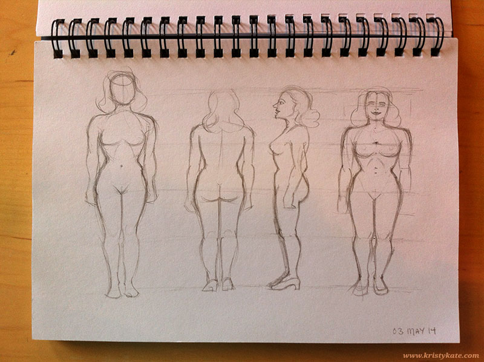
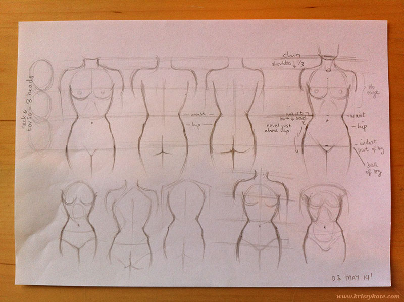
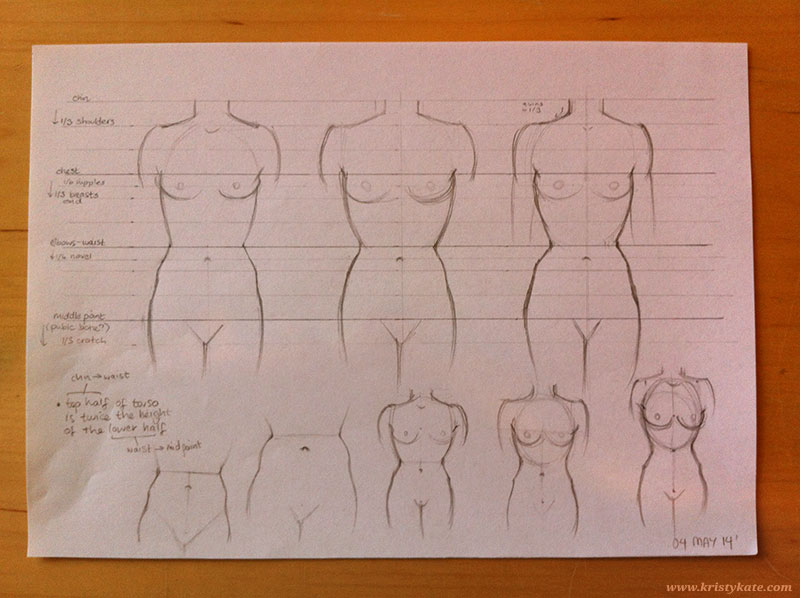
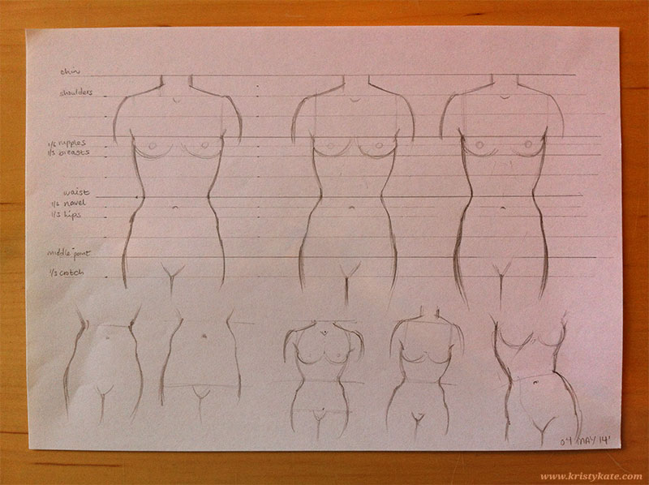
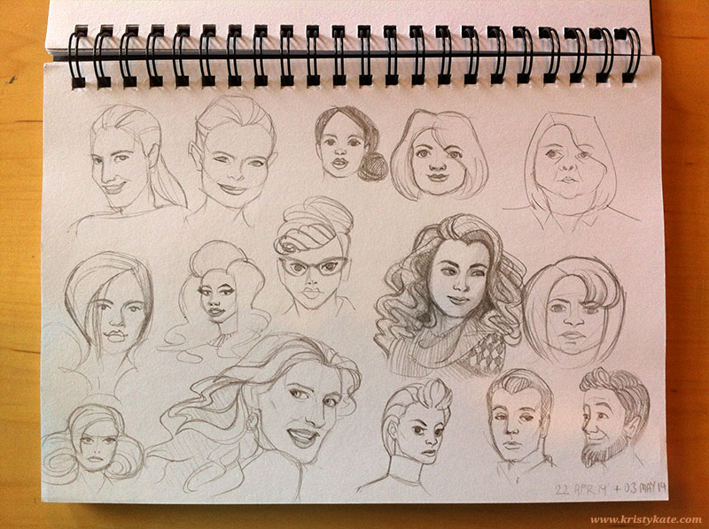

Week 6 Studies
April 28th - May 4th
After feeling unsatisfied with a lack of art study, I made it my goal over the weekend to assess my schedule and achieve a better balance between tasks.
The result was a revised weekly schedule and a couple of changes to implement:
- Monday mornings are now set aside for blog updates.
- Have shorter, 15min max breaks AWAY from the screen - I was surprised to discover that breaks would easily hit 30mins or more due to reading various articles and posts online.
- Set aside a minimum of 20mins-1hr of art study on weeknights, and at least 2hrs of digital painting (and/or art study) on the weekend.
Hopefully within the next week or two we'll see an improvement in my art study habits!
Over the weekend I also completed some anatomy studies, looking at the proportions of the 'ideal' female body and more specifically, the torso.
These first studies look pretty stumpy (more observation on the proportional widths of the body required).

And the torso studies - slowly building a better understanding of the waist-hip-leg placement.



Lastly, some sketches of faces seen on tv or in magazines.

And that's all for week 6!
Until next time,
x Kristy Kate
+ + +
Have any thoughts on my studies? Help me on my creative journey by leaving a comment (constructive criticism welcome) or getting in contact via Twitter or Facebook. I'm more than happy to return the favour!